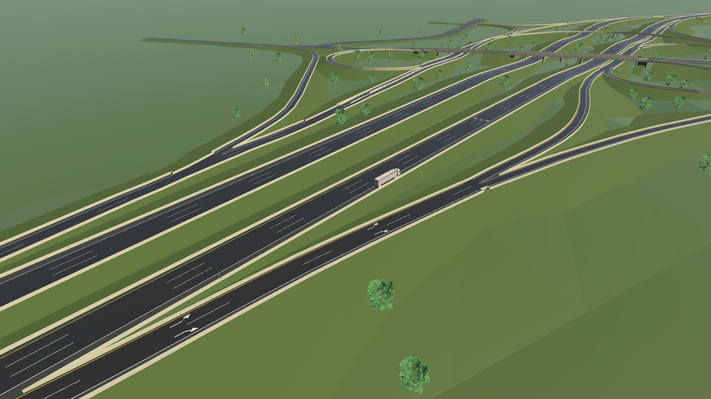
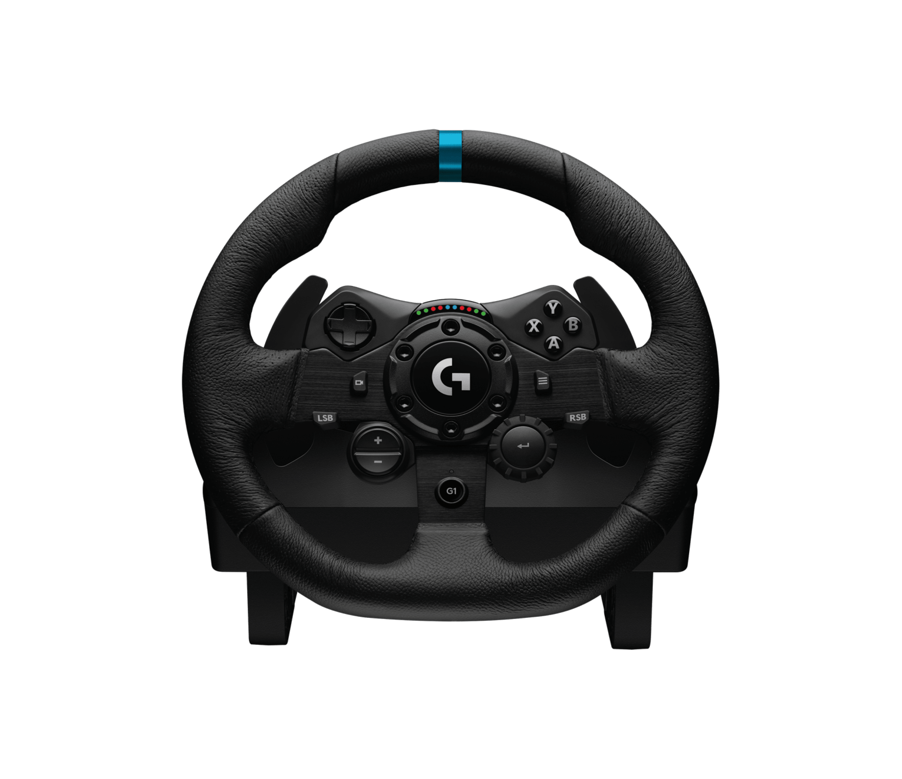
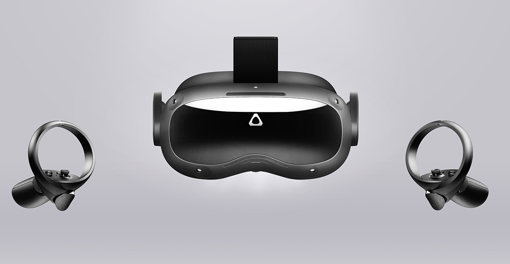
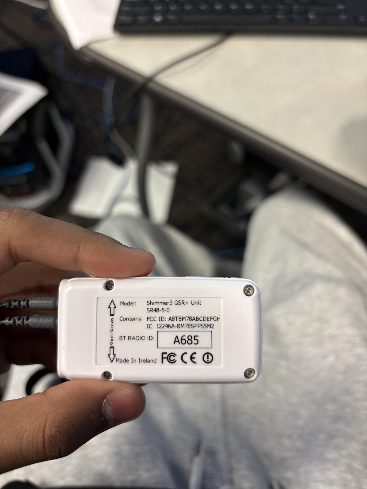
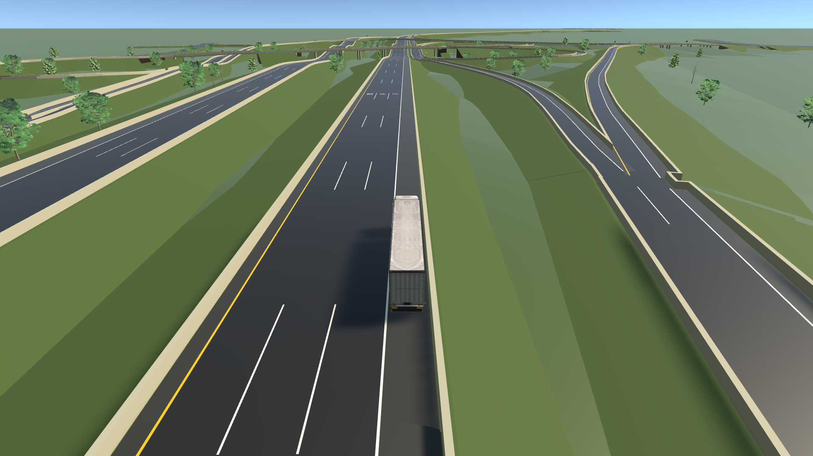

The driving environment
Study a stopped-truck encounter within a simulated highway. Route completion provides a clear end to each driving task.
HUMAN FACTORS · DRIVING SIMULATION
A controlled environment to explore how drivers respond to stopped trucks, roadway conditions, and warning systems.

Complete a goal-oriented route in the simulator.
Record driving behavior and physiological signals.
Explore vehicle, traffic, and skin-conductance data.
THE STUDY
Bring road conditions, driver actions, and measured responses into the same research workflow.
Study a stopped-truck encounter within a simulated highway. Route completion provides a clear end to each driving task.
Review speed, steering, throttle, braking, and proximity to the truck alongside surrounding traffic.
Inspect Shimmer skin-conductance measurements and iMotions event markers alongside simulation data.
RESEARCH AT THE UNIVERSITY OF MEMPHIS
National Science Foundation
Industry–University Cooperative
Research Centers
EXPERIMENT INSTRUMENTS
Each instrument captures a different part of the driving experience.

Steering wheel and pedals provide the driving controls. Unity logs steering, throttle, and braking during the route.
Manufacturer details ↗
The headset provides an immersive view of the simulation when the VR configuration is used.
Manufacturer details ↗
Finger electrodes measure skin conductance. iMotions records the sensor stream and incoming simulation markers.
Photo of the study instrumentRECORDING WORKFLOW
Unity sends event markers to iMotions on the collection laptop. Recording and marker checks are required for each session; this website does not control either application.
RESEARCHER WORKSPACE
Prepare session details and download a spreadsheet.
SESSION ANALYSIS
Open the combined dashboard to explore driving behavior, surrounding vehicles, and skin conductance.

Select your combined dashboard HTML file. It opens only in this tab and is not uploaded.